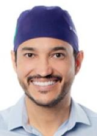

Rondônia
Quem ocupa os cargos hoje e quem assume em 2027.
Resultado provisórioTSE, capturado em 29/10/2026
Poder Executivo
Administra o governo e executa as leis: saúde, educação, segurança, estradas e o orçamento.
Governador
Coronel Marcos RochaUNIÃO · 458.370 votos · eleito em 2022✓ Reeleito›Quem comanda cada cidade do estado.
Poder Legislativo
Cria as leis, aprova o orçamento e fiscaliza o Executivo.
Senadores (3)
 Confucio MouraMDB · 230.361 votos · eleito em 2018★ Novato no Senado›Jaime BagattoliPL · 293.488 votos · eleito em 2022★ Novato no Senado›Marcos RogérioDEM · 324.939 votos★ Novato no Senado›
Confucio MouraMDB · 230.361 votos · eleito em 2018★ Novato no Senado›Jaime BagattoliPL · 293.488 votos · eleito em 2022★ Novato no Senado›Marcos RogérioDEM · 324.939 votos★ Novato no Senado›
Deputados federais (8)
Bancada federal por partido
8 cadeiras de Rondônia
- UNIÃO338%
- MDB225%
- PL225%
- PODE112%
Do partido com mais cadeiras para o com menos, não por posição política. Cada partido usa a sua cor de marca.
Deputados federais (8): buscar e ver a lista

DR Fernando MáximoUNIÃO · 85.604 votos★ Novato na Câmara›Lucio MosquiniMDB · 48.735 votos✓ Reeleito›Maurício CarvalhoUNIÃO · 32.637 votos★ Novato na Câmara›Rafael Fera O Fiscal do PovoPODE · 24.286 votos · eleito em 2022★ Novato na Câmara›Silvia CristinaPL · 65.012 votos · eleito em 2022✓ Reeleito›Thiago FloresMDB · 23.791 votos★ Novato na Câmara›Deputados estaduais e distritais (24)
Assembleia por partido
24 cadeiras de Rondônia
- UNIÃO521%
- PATRIOTA312%
- PSD312%
- MDB28%
- PL28%
- PSC28%
- REPUBLICANOS28%
- PODE14%
- PP14%
- PSB14%
- PT14%
- PTB14%
Do partido com mais cadeiras para o com menos, não por posição política. Cada partido usa a sua cor de marca; cinza é partido sem cor registrada na fonte.
Deputados estaduais e distritais (24): buscar e ver a lista
Os eleitos de cada cidade do estado.
Poder Judiciário
Julga os conflitos e garante que as leis sigam a Constituição.
Os desembargadores do Tribunal de Justiça e do Tribunal Regional Eleitoral. Não são eleitos.
Poder Executivo
Administra o governo e executa as leis: saúde, educação, segurança, estradas e o orçamento.
Governador
Marcos RogérioPL · 537.370 votos★ Novato›Quem comanda cada cidade do estado.
Poder Legislativo
Cria as leis, aprova o orçamento e fiscaliza o Executivo.
Senadores (3)
Bruno ScheidPL · 474.226 votos★ Novato no Senado›DR. Fernando MáximoPL · 570.799 votos★ Novato no Senado›Jaime BagattoliPL · 293.488 votos · eleito em 2022★ Novato no Senado›Deputados federais (8)
Bancada federal por partido
8 cadeiras de Rondônia
- PL338%
- PODE225%
- UNIÃO225%
- PSD112%
Do partido com mais cadeiras para o com menos, não por posição política. Cada partido usa a sua cor de marca.
Deputados federais (8): buscar e ver a lista
Deputados estaduais e distritais (24)
Assembleia por partido
24 cadeiras de Rondônia
- PL729%
- PRD312%
- PSD312%
- AVANTE28%
- NOVO28%
- PP28%
- PT28%
- REPUBLICANOS28%
- PODE14%
Do partido com mais cadeiras para o com menos, não por posição política. Cada partido usa a sua cor de marca; cinza é partido sem cor registrada na fonte.
Deputados estaduais e distritais (24): buscar e ver a lista
Os eleitos de cada cidade do estado.
Poder Judiciário
Julga os conflitos e garante que as leis sigam a Constituição.
Os desembargadores do Tribunal de Justiça e do Tribunal Regional Eleitoral. Não são eleitos.
Como ler
★ Novato Primeiro mandato nesta casa (Câmara ou Senado).
✓ Reeleito Já estava no cargo e foi eleito de novo.
↺ Retorno Já teve mandato, mas estava fora.
Sem selo Não conseguimos ligar a pessoa a um mandato anterior. Isso não quer dizer que seja novata: simplesmente não afirmamos nada.
Provisório Só é confirmado na diplomação.